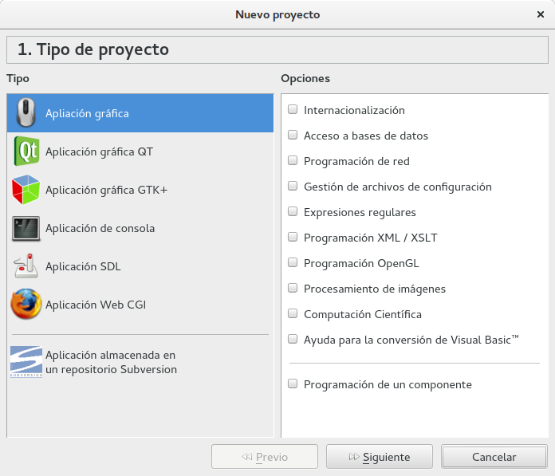
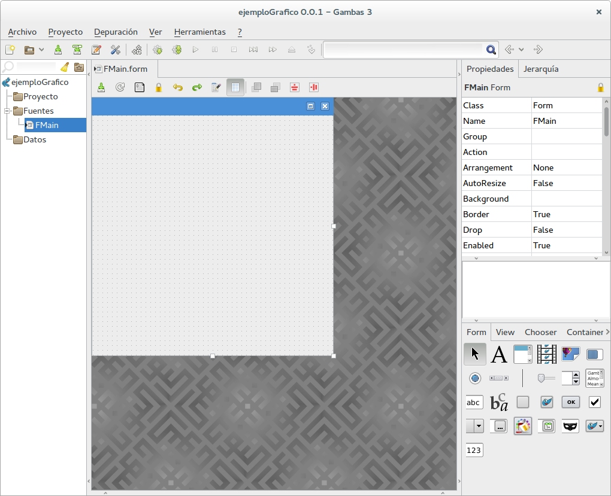
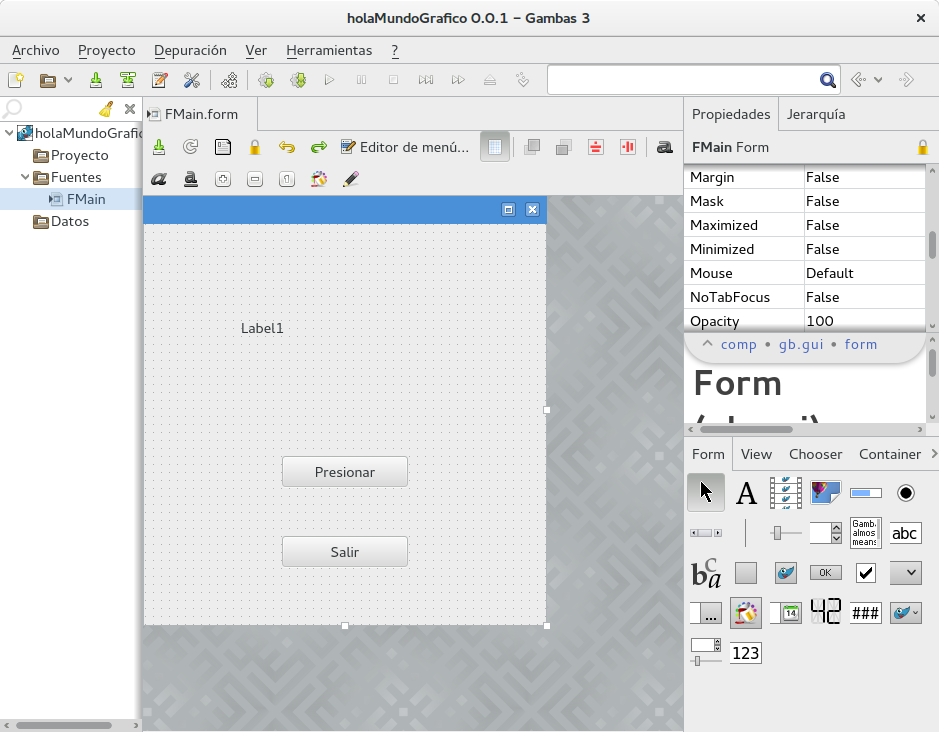

Gambas es un lenguaje que permite el desarrollo de aplicaciones gráficas de una forma sencilla e intuitiva utilizando pocas líneas de código. Hasta ahora solo hemos realizado programas que se ejecuten en la consola, sin embargo, una de las fortalezas de Gambas es la facilidad para crear interfaces gráficas de usuario.
Para el desarrollo de aplicaciones gráficas utilizaremos todos los conceptos que hemos visto hasta ahora, y se combinarán con los elementos y la forma de construcción de las aplicaciones gráficas con todos los elementos que Gambas proporciona. Este lenguaje permite realizar aplicaciones gráficas robustas con una cantidad moderada de código y una interfaz amigable para el usuario.
Las aplicaciones gráficas en Gambas, de igual forma que Basic, están orientadas a eventos. Un evento es una acción que ocurre en la aplicación, que pueden ser un click, seleccionar un texto, presionar un boton o un elemento de la aplicación y muchos eventos más. El desarrollador entonces debe programar la forma como la aplicación debe reaccionar ante esos eventos.
El Entorno de Desarrollo
Al iniciar Gambas nos pregunta el tipo de aplicación a desarrollar: Aplicación gráfica, Aplicación gráfica QT, Aplicación gŕafica GTK+, Aplicación de consola, Aplicación SDL y Aplicación Web CGI.
Hasta ahora en todos los casos hemos seleccionado "Aplicación de consola", ahora seleccionamos "Aplicación gráfica" y nombramos el proyecto.
Al crear el proyecto gráfico, debe abrirse el ambiente de desarrollo de la aplicación gráfica y los elementos de desarrollo para este tipo de aplicaciones. Observe que en la parte de la izquierda se encuentra el contenido del proyecto gráfico, de doble click sobre el elemento FMain y deberá ver algo similar a esto:
La pantalla del editor está dividia en cuatro paneles principales: Panel del Proyecto, Panel de Edición, Panel de Propiedades/Jerarquía y el Panel de Elementos Gráficos. A continuación se describen cada uno de ellos:
- En la parte izquierda está el Panel del Proyecto: Por defecto, Gambas crea una estructura de elementos del proyecto, que incluye el elemento FMain que es un formulario principal. En este panel se encuentran todos los elementos que forman parte del proyecto en cuestión. Si se desea añadir algún elemento, formulario o archivo al proyecto, este es el lugar donde debe hacerlo.
- En la parte central de la ventana se muestra el editor de los formularios. En esta sección se puede modificar el formulario, sus dimensiones y propiedades, así como agregar los elementos gráficos que se mencionarán más adelante.
- En la parte derecha se encuentran dos paneles, en la parte superior está el panel de propiedades/jerarquía y en la parte inferior se encuentra el panel de elementos gráficos.
- El panel de propiedades/jerarquía muestra todas las propiedades que posee el elemento seleccionado en el panel central y la jerarquía de los elementos gráficos existentes en la aplicación gráfica.
- El panel de elementos gráficos (widgets) muestra todos los elementos que pueden agregarse al formulario, una vez añadido se pueden modificar sus propiedades para controlar su comportamiento en la ejecución de la aplicación gráfica.
Un formulario es un contenedor gráfico de elementos que ejercen acciones en una aplicación gráfica. Al ejecutarse la aplicación, los formularios se visualizan como ventanas. Por defecto, al crear un proyecto gráfico nuevo, Gambas crea también un formulario principal llamado FMain. Para crear un nuevo formulario, basta con pulsar el botón derecho del ratón en la carpeta Fuentes en el Panel del Proyecto, luego elegir Nuevo | Formulario.
Al ejecutar una aplicación gráfica, el primer formulario que se abre es el marcado como prinicipal, que por defecto es FMain. Se puede observar en el panel del proyecto cual es el formulario principal, está señalado con una pequeña flecha negra. El desarrollador puede decidir cual será el formulario principal, para ello debe buscar el formulario en cuestión en el panel de proyecto, dar click derecho en el y seleccionar "Clase de inicio".
Hola Mundo versión gráfica
Cuando comenzamos con Gambas hicimos la primera aplicación Hola Mundo en una versión para consola, en esta ocasión realizaremos un equivalente pero en su versión gráfica.
En primer lugar debemos crear un nuevo proyecto gráfico y ponerle un nombre, por ejemplo holaMundoGrafico.
Posteriormente debemos agregar al formulario FMain tres elementos: una etiqueta de texto (Label) y dos botones (Button). Para ello seleccione los elementos en el panel de elementos gráficos y arrastrelos hacia el formulario.
Para cambiar el texto de los elementos gráficos, seleccione el elemento deseado y busque en el panel Propiedades la propiedad Text y escriba en esa caja un nuevo texto. Cambie los textos de los botones para que quede de la siguiente forma:
En este momento, la parte gráfica de la aplicación ya está lista, solo falta añadir el código para el comportamiento de los elementos. Para ello, de doble click en el botón Presionar. Observe que se abre el editor de código y se posciona el cursor dentro de la subrutina llamada Button1_Click(). Esta subrutina es la que se ejecuta cuando ocurre el evento Click en el botón 1.
Añada el siguiente código a la subrutina Button1_Click():
Public Sub Button1_Click()
Label1.Text = "Hola Mundo Cruel"
("Hola Mundo Cruel")
End
Y añada también el siguiente código al evento click del botón Salir, Button2_Click()
Public Sub Button2_Click()
Quit
End
Al ejecutar la aplicación verá la ventana del formulario principal, y los botones que le agregamos. Al presionar el primer botón, ocurre el evento Click del
botón 1 y se ejecuta el código en la subrutina Button1_Click().
Observe que en esa subrutina se hace referencia al elemento lamado Label1 y se
modifica el contenido de la propiedad Text, asignando el texto "Hola Mundo Cruel". Por esta razón es que en el fomulario aparecerá este texto al presionar el
botón 1.
Observe que además se llama al Objeto especial Message y su método Info con el argumento "Hola Mundo Cruel". Esta instrucción hace
una llamada la sistema operativo solicitando que se despliegue un mensaje informativo con el texto que se pasa como argumento. Este tipo de mensaje tiene por defecto
un botón con el texto "OK".
Al presionar el segundo botón ocurre el evento click y se invoca a la subrutina Button2_Click(). En ella solo se ejecuta la función especial Quit,
que como su nombre lo indica, finaliza la aplicación gráfica en ejecución.
Ejemplos Gráficos
-
Ejemplo 1. Crear un botón que intercambie dos imágenes
Crear:
- 2 imágenes distintas.
- 2 Picture Box.
- 1 Botón.
En ambos Picture Box es necesario cambiar las propiedades:
- Stretch: True
- Visible: False
Código:
Public Sub Button1_Click() If PictureBox1.Visible = True Then PictureBox1.Visible = False PictureBox2.Visible = True Else PictureBox2.Visible = False PictureBox1.Visible = True Endif End -
Ejemplo 2. Un botón que muestre una imagen y un segundo botón que muestre otra.
Crear:
- 2 Imágenes distintas
- 2 Picture Box
- 2 Botones
En ambos Picture Box es necesario cambiar las propiedades:
- Stretch: True
- Visible: False
Código:
Public Sub Button1_Click() If PictureBox1.Visible = True Then PictureBox1.Visible = False Else PictureBox1.Visible = True Endif End Public Sub Button2_Click() If PictureBox2.Visible = True Then PictureBox2.Visible = False Else PictureBox2.Visible = True Endif End -
Ejemplo 3. Mover una imagen en diagonal, posteriormente regresar sobre la misma diagonal.
Crear:
- Picture Box con imágen
- 1 Botón
Código:
Public Sub Button1_Click() Dim a As Integer For a = 40 To 480 Step 10 img1.x = a img1.y = a Wait 0.1 Next For a = 480 To 40 Step -10 img1.x = a img1.y = a Wait 0.1 Next End -
Ejemplo 4. Desplegar aleatoriamente 5 imágenes. Detener al click de un botón parar.
Crear:
- 5 imágenes distintas: uno.jpg, dos.jpg, tres.jpg, cuatro.jpg y cinco.jpg
- 1 Picture Box
- 3 Botones: Iniciar, Parar y Salir
Código:
Public paro As Boolean Public Sub Button1_Click() Dim arreglo As New String[5] Dim y As Byte arreglo[0] = "uno.jpg" arreglo[1] = "dos.jpg" arreglo[2] = "tres.jpg" arreglo[3] = "cuatro.jpg" arreglo[4] = "cinco.jpg" paro = False Repeat y = Rnd(0, 5) Label1.Text = y PictureBox1.Picture = Picture[arreglo[y]] Wait 0.1 Until paro = True End Public Sub Button2_Click() paro = True End Public Sub Button3_Click() Quit End -
Ejemplo 5. Pedir datos a través de una caja de texto y guardarlos en una variable. Desplegar el contenido de la variable.
Crear:
- 1 Text Box
- 1 Text Label
- 1 Label
- 1 Botón
Código:
Public Sub Button1_Click() Dim a As String Dim b As Integer a = Trim(TextBox1.Text) TextLabel1.Text = "Pediste " & a & " Boletos" b = CInt(a) Label1.Text = "Total " & (b + 5) Wait 5 Message.Info("Gracias por su compra") End -
Ejemplo 6. Recorre una imagen en un tablero.
Crear:
- 1 Timer
- 1 Picture Box
- 2 Botones: Inicio y Paro
Código:
Public coordx As New Integer[9] Public coordy As New Integer[9] Public i As Byte Public Sub _new() End Public Sub Form_Open() coordx[0] = 32 coordy[0] = 48 coordx[1] = 120 coordy[1] = 48 coordx[2] = 192 coordy[2] = 48 coordx[3] = 32 coordy[3] = 152 coordx[4] = 120 coordy[4] = 152 coordx[5] = 192 coordy[5] = 152 coordx[6] = 32 coordy[6] = 256 coordx[7] = 120 coordy[7] = 256 coordx[8] = 192 coordy[8] = 256 End Public Sub Timer1_Timer() PictureBox1.x = coordx[i] PictureBox1.y = coordy[i] Inc i If i > 8 Then i = 0 Endif End Public Sub Button1_Click() Timer1.Enabled = True End Public Sub Button2_Click() Timer1.Enabled = False End -
Ejemplo 7. Tablero mediante un arreglo de Objetos.
Crear:
- 1 Imágen
- 9 Picture Box
- 2 Botones: Inicio y Paro
Código:
Public paro As Boolean Public objeto As New Object[9] Public Sub Form_Open() paro = False objeto[0] = PictureBox1 objeto[1] = PictureBox2 objeto[2] = PictureBox3 objeto[3] = PictureBox4 objeto[4] = PictureBox5 objeto[5] = PictureBox6 objeto[6] = PictureBox7 objeto[7] = PictureBox8 objeto[8] = PictureBox9 End Public Sub inicio_Click() Dim i As Integer Dim pic As New Picture Repeat Print i If i = 0 Then objeto[i].visible = True objeto[8].visible = False Else objeto[i].visible = True objeto[i - 1].visible = False Endif Wait 0.2 objeto[i].Picture = Picture["uno.jpg"] Inc i If i = 9 Then i = 0 Endif Until paro = True End Public Sub parar_Click() paro = True End -
Ejemplo 8. Selecciona una imagen en un formulario, se visualiza en otro.
Crear:
- 2 formularios: Form1 y Form2 (formulario de inicio)
- Form1:
- 3 imágenes
- 3 Picture Box (cargar cada una de las imágenes)
- Poner un Label con texto informativo
-
Form2:
- 1 Picture Box (cambiar el nombre a: seleccion)
- 1 Botón
- Poner un label con texto informativo
Código Form1:
Public Sub Form_Open() End Public Sub PictureBox1_MouseDown() Me.Close(1) End Public Sub PictureBox2_MouseDown() Me.Close(2) End Public Sub PictureBox3_MouseDown() Me.Close(3) EndCódigo Form2:
Public Sub Button1_Click() Select Form1.ShowDialog() Case 1 seleccion.Picture = Picture["uno.jpg"] Case 2 seleccion.Picture = Picture["dos.jpg"] Case 3 seleccion.Picture = Picture["tres.jpg"] End Select End -
Ejemplo 9. Drag & Drop: Mover una imagen de un PictureBox a otro.
Crear:
- 1 formulario
- 1 imagen
- 1 PictureBox: activar propieda Stretch (cargar la imagen)
- 1 PictureBox: activar propiedad Stretch y Drop
Código
Public Sub PictureBox1_MouseDrag() PictureBox1.Drag("imagen.jpg") End Public Sub PictureBox2_MouseDrop() PictureBox2.Picture = Picture[Drag.Data] End -
Ejemplo 10. Drag & Drop: Mover una imagen de un PictureBox a algún PictureBox.
Crear:
- 1 formulario
- 3 imágenes
- 3 PictureBox: activar propieda Stretch (cargar cada imagen en cada PictureBox)
- 1 PictureBox: activar propiedad Stretch y Drop
- 3 TextLabel: para los PBox de origen, tendrá el nombre del archivo origen
- 1 TextLabel: para el Pbox destino, tendrá el nombre del archivo arrastrado
- 1 TextLabel: para el PBox destino, tendrá el valor de Drag.Data
Código
Public archivos As New String[3] Public Sub PictureBox1_MouseDrag() PictureBox1.Drag(archivos[0]) Print archivos[0] End Public Sub PictureBox2_MouseDrag() PictureBox2.Drag(archivos[1]) Print archivos[1] End Public Sub PictureBox3_MouseDrag() PictureBox3.Drag(archivos[2]) Print archivos[2] End Public Sub PictureBox4_Drop() PictureBox4.Picture = Picture[Drag.Data] TextLabel4.Text = Drag.Data TextLabel5.Text = Drag.Source.Name Print Drag.Data End Public Sub PictureBox4_Drop() archivos[0] = "uno.jpg" archivos[1] = "dos.jpg" archivos[2] = "tres.jpg" End